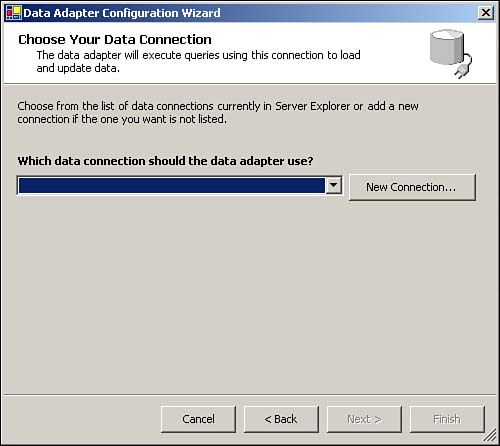
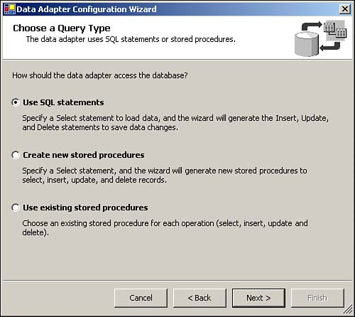
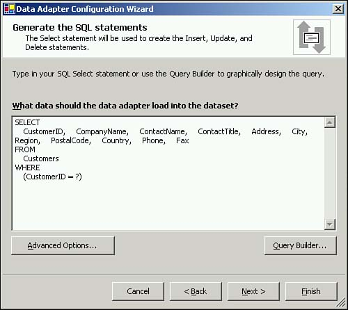
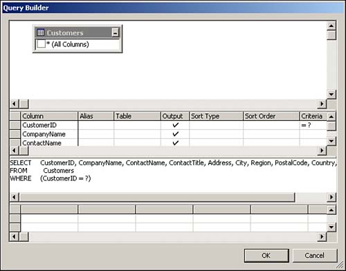
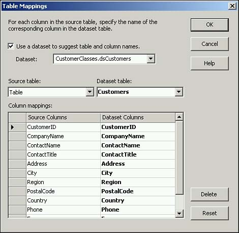
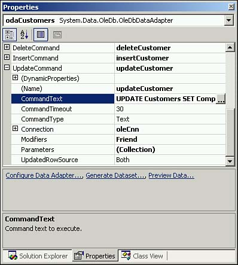

9.3 Use Visual Studio .NET Tools to Speed Up Writing ADO.NET Code
The code you've written up to this point doesn't do that much. It doesn't even access the database. The next task is to write code that populates the class with data from the database, and the first step in doing this is setting up database access objects.
Technique
In Chapter 3, you learned how to fill a dataset to store data in a disconnected fashion. In this chapter, you will use a strongly typed dataset-that is, a dataset with data rows that match the name and datatypes of the columns. You will learn how to use the DataAdapter Configuration Wizard to autogenerate code that initializes Command and DataAdapter objects for use with a specific table.
Steps
Right-click on your project and select Add New Item from the Add menu. Choose DataSet and name it dsCustomers.xsd.
Visual Studio .NET opens dsCustomers.xsd in Design mode. Expand the Server explorer and drill down to Data Connections, Northwind, Tables. Drag the Customers table onto the Design view.
Visual Studio might process for a few seconds, but afterward, you'll have a strongly typed dataset.
The result? Instead of writing dataset code like this:
strCustomerID = CType(ds.Tables("Customers").Rows(0).Item("CustomerID"), String)
you'll have code that looks like this:
strCustomerID = ds2.Customers(0).CustomerID
A strongly typed dataset is a combination of two documents. One is a .vb file with the same name as the dataset. Visual Studio .NET will not show you the contents of this file (unless you step into it while debugging), and the contents don't appear in the Solution Explorer. The other file is an .xsd file, or a XML Schema Definition (XSD), which defines a data structure. The .vb file reads the XSD to properly instantiate a strongly typed dataset.
You should always take a look at any code that is generated automatically by a tool because the tool might generate code that doesn't do precisely what you want it to do. If you have never seen an XSD, this is also a good time to learn something new. Listing 9.18 shows the XSD for the dsCustomers dataset. You can view the XSD you created by opening dsCustomers.xsd from the Solution Explorer and then clicking the XML button at the bottom of left corner of the screen.
Listing 9.18 dsCustomers.xsd: The Customers XSD
<?xml version="1.0" encoding="utf-8" ?>
<xsd:schema id="dsCustomers"
targetNamespace="http://tempuri.org/dsCustomers.xsd"
elementFormDefault="qualified"
xmlns="http://tempuri.org/dsCustomers.xsd"
xmlns:xsd="http://www.w3.org/2001/XMLSchema"
xmlns:msdata="urn:schemas-microsoft-com:xml-msdata">
<xsd:element name="dsCustomers" msdata:IsDataSet="true">
<xsd:complexType>
<xsd:choice maxOccurs="unbounded">
<xsd:element name="Customers">
<xsd:complexType>
<xsd:sequence>
<xsd:element name="CustomerID" type="xsd:string" />
<xsd:element name="CompanyName" type="xsd:string" />
<xsd:element name="ContactName" type="xsd:string" minOccurs="0" />
<xsd:element name="ContactTitle" type="xsd:string" minOccurs="0" />
<xsd:element name="Address" type="xsd:string" minOccurs="0" />
<xsd:element name="City" type="xsd:string" minOccurs="0" />
<xsd:element name="Region" type="xsd:string" minOccurs="0" />
<xsd:element name="PostalCode" type="xsd:string" minOccurs="0" />
<xsd:element name="Country" type="xsd:string" minOccurs="0" />
<xsd:element name="Phone" type="xsd:string" minOccurs="0" />
<xsd:element name="Fax" type="xsd:string" minOccurs="0" />
</xsd:sequence>
</xsd:complexType>
</xsd:element>
</xsd:choice>
</xsd:complexType>
<xsd:unique name="dsCustomersKey1" msdata:PrimaryKey="true">
<xsd:selector xpath=".//Customers" />
<xsd:field xpath="CustomerID" />
</xsd:unique>
</xsd:element>
</xsd:schema>
It is beyond the scope of this chapter and this book to fully explain an XSD. The subject requires an entire book of its own. But it's important to point out a few areas of this XSD.
The element tags are really nothing more than the properties you have already declared. Each element has a name that corresponds to a column in the Customers table, as well as a type that loosely corresponds to the datatype of the column.
The element tag also has a minOccurs attribute. This attribute actually defines whether a value is required for that element. The default for the minOccurs attribute is 1, which means that the element does not allow Null values.
Also, take a close look at the lines at the end of the XSD that begin with <xsd:unique. This XML block refers back to the CustomerID element, and it declares that that element is the primary key of the dsCustomers XSD.
A dataset is just one part of what you need. Without a data adapter, the dataset just sits there. You could create all the data adapter code yourself, but again, Visual Studio .NET can do a lot of the work for you.
Right-click on your project and select Add New Item from the Add menu. Choose Component Class and name it CCustomerData.vb.
Visual Studio opens CCustomerData.vb in Design mode. Expand the Toolbox on the left side of the screen. Choose the Data tab, and drag an OleDbConnection onto the Design view.
Click on OleDbConnection1 and rename it oleCnn.
Set the ConnectionString property. You should have an existing connection to the Northwind database. (You set this up in section 9.1.) If you don't have an existing connection, create a connection by selecting New Connection from the ConnectionString menu.
Drag an OleDbDataAdapter from the Data tab of the Toolbox. Doing so opens the DataAdapter Configuration Wizard.
First, in the Choose Your Data Connection page of the wizard, shown in Figure 9.2, select a connection for the data adapter, and then click Next.

Now, you have the option of choosing the type of query to use with the data adapter. For the purposes of this example, use SQL statements. The other choices, shown in Figure 9.3, allow you to specify existing stored procedures, or have the wizard create new database stored procedures for you.

The next page of the wizard, shown in Figure 9.4, asks for a SQL statement to retrieve data from the database. Choose Query Builder to create a new query.

Using the Query Builder, shown in Figure 9.5, select the Customers table, and return all the columns in the table. Add a WHERE condition to select a single customer row based on the Customer ID as in Listing 9.19. Click Next and then Finish.
Listing 9.19 CustomerData.vb: The SELECT Command Text to Use in the DataAdapter Configuration Wizard
SELECT CustomerID, CompanyName, ContactName, ContactTitle,
Address, City, Region, PostalCode, Country, Phone, Fax
FROM Customers
WHERE CustomerID = ?

Again, Visual Studio picks some undescriptive and bland names for the data adapter and its Select, Update, Insert, and Delete commands. In this example, OleDbAdapter1 will be renamed to odaCustomers, and OleDb[Action]Command1 will be renamed to [Action]Customer.
Finally, right-click on odaCustomers and select Properties. In the Properties window, expand the TableMappings property, which will open a dialog box like that shown in Figure 9.6. This property tells Visual Studio .NET where to look for datatype and column information. The DataAdapter Configuration Wizard will have referenced the Customers table because it was not aware of the XSD you created earlier in this section. Check on the Use a Dataset to Suggest Table and Column Names check box, and select dsCustomers from the DataSet combo box. Make sure that the DataSet Table combo box references the Customers table of the dataset.

Based on the query you entered, Visual Studio .NET will generate Update, Delete, and Insert SQL statements for the Customers table, as well as code that populates the parameter collections and other properties of Command objects based on those SQL statements. Most important, if you modify the SQL statements, Visual Studio .NET updates the Visual Basic code setting up their command objects.
The SQL statements that Visual Studio .NET generates might be a bit more complex than you need. In Listing 9.20, the UPDATE command has a WHERE condition that references every column instead of just the primary key.
Listing 9.20 CustomerData.vb: The Update Command Text from the Visual Studio .NET-Generated Data Adapter
UPDATE Customers
SET CustomerID = ?, CompanyName = ?,
ContactName = ?, ContactTitle = ?,
Address = ?, City = ?,
Region = ?, PostalCode = ?,
Country = ?, Phone = ?,
Fax = ?
WHERE (CustomerID = ?)
AND (CompanyName = ?)
AND (Address = ? OR ? IS NULL AND Address IS NULL)
AND (City = ? OR ? IS NULL AND City IS NULL)
AND (ContactName = ? OR ? IS NULL AND ContactName IS NULL)
AND (ContactTitle = ? OR ? IS NULL AND ContactTitle IS NULL)
AND (Country = ? OR ? IS NULL AND Country IS NULL)
AND (Fax = ? OR ? IS NULL AND Fax IS NULL)
AND (Phone = ? OR ? IS NULL AND Phone IS NULL)
AND (PostalCode = ? OR ? IS NULL AND PostalCode IS NULL)
AND (Region = ? OR ? IS NULL AND Region IS NULL)
This SQL statement is guaranteed to make sure you update only the record you retrieved. If the record has changed in another session since the data was retrieved by the current session, that row won't be updated. This might be the behavior you need in some situations. Still, the whole point of a primary key is that it fully represents all the non-key values in the table (and, of course, none of the non-key values should rely on each other for definition), so perhaps that WHERE condition is overkill.
You might also have noticed that the SET clause of the UPDATE statement that Visual Studio .NET generated updates the value of the CustomerID column. In the case of the Customers table, this SQL statement could not execute because DRI is enforcing the relationship with the Orders table. However, not all databases use DRI; if the CustomerID were changed in that scenario, the code would execute and orphan rows in other tables that contain the old CustomerID value.
In that case, it would be best to modify the Visual Studio .NET-generated SQL statements to reflect the primary key and make the code more sensible. For example, the UPDATE statement from Listing 9.20 would read as shown in Listing 9.21.
You can access the Insert, Update, and Delete SQL statements used by the data adapter by expanding the related command in the Properties window. Then look for the CommandText property and click on the Ellipsis button, as shown in Figure 9.7.
Listing 9.21 CustomerData.vb: A Simpler Update Command Text from the Visual Studio .NET-Generated Data Adapter
UPDATE Customers
SET CompanyName = ?,
ContactName = ?, ContactTitle = ?,
Address = ?, City = ?,
Region = ?, PostalCode = ?,
Country = ?, Phone = ?,
Fax = ?
WHERE (CustomerID = ?)

When you do modify those statements, you'll notice that a SELECT SQL statement follows the Insert and Update commands.
In ADO 2.x, a cursor was maintained on the server using server resources or on the client with a connection to the server. This meant that an updateable recordset would receive notification of data changes, such as the value of an IDENTITY or other auto-incrementing column after inserting a new row or the values of updated data after an UPDATE trigger made additional changes. The open connection and cursor, however, consume substantial resources and can adversely affect server performance. ADO.NET's disconnected architecture is an attempt to resolve this resource problem. Still, refreshing the dataset with the most current data can be quite helpful in databases that have triggers or complex stored procedures, so this second SQL command will retrieve the updated data from the database and refresh the dataset to reflect the database-side changes to submitted data.
Tip
 |
If you're working with a Web application on SQL Server, you might not need this level of concurrency. All you might need is the new IDENTITY value when inserting records. Instead of selecting back the inserted row, you could end the SQL statement with this:
SELECT @@IDENTITY
which returns the last identity value created in the current transaction. You execute the Insert command using the ExecuteScalar method, which returns this integer value to your Visual Basic code.
This requires dropping the Visual Studio .NET-generated data adapter code, so you need to weigh this slight performance gain against the time needed to maintain manually generated code. However, as you'll see in the following pages of this section, the code that Visual Studio .NET generates is nothing you haven't read about in the earlier chapters of this book.
|
As mentioned earlier, before you start writing code that utilizes this data adapter, you should take a look at the code that Visual Studio .NET has generated. You can view the generated code, like the excerpts shown in Listing 9.22, by right-clicking on the gray area of CCustomerData.vb and selecting View Code.
Listing 9.22 CustomerData.vb: A Sample of the Code Generated by the Visual Studio .NET DataAdapter Configuration Wizard
Private Sub InitializeComponent()
' instantiate the connection object
Me.oleCnn = New System.Data.OleDb.OleDbConnection()
' instantiate the data adapter
Me.odaCustomers = New System.Data.OleDb.OleDbDataAdapter()
' instantiate the OLE DB command we will use for updating data
Me.updateCustomer = New System.Data.OleDb.OleDbCommand()
' set the table mapping properties for the data adapter. This defines
' which columns' names in your client code map to which columns in the table.
' This allows you to alias terse and obscure column names with longer,
' more descriptive names.
Me.odaCustomers.TableMappings.AddRange(New _
System.Data.Common.DataTableMapping()
{New System.Data.Common.DataTableMapping("Table", "Customers",
New System.Data.Common.DataColumnMapping()
{New System.Data.Common.DataColumnMapping("CustomerID", "CustomerID"),
New System.Data.Common.DataColumnMapping("CompanyName", "CompanyName"),
New System.Data.Common.DataColumnMapping("ContactName", "ContactName"),
New System.Data.Common.DataColumnMapping("ContactTitle", "ContactTitle"),
New System.Data.Common.DataColumnMapping("Address", "Address"),
New System.Data.Common.DataColumnMapping("City", "City"), _
New System.Data.Common.DataColumnMapping("Region", "Region"), _
New System.Data.Common.DataColumnMapping("PostalCode", "PostalCode"),
New System.Data.Common.DataColumnMapping("Country", "Country"),
New System.Data.Common.DataColumnMapping("Phone", "Phone"),
New System.Data.Common.DataColumnMapping("Fax", "Fax")
})
})
' make the OLE DB command we instantiated above the update command
' for the data adapter.
Me.odaCustomers.UpdateCommand = Me.updateCustomer
' set the connection for the update command
Me.updateCustomer.Connection = Me.oleCnn
' set the command text of the update command to the SQL statements from
' Listing 9.16.
Me.updateCustomer.CommandText = _
"UPDATE Customers SET CompanyName = ?, ContactName = ?, ContactTitle = ?, " & _
"Address = ?, City = ?, Region = ?, PostalCode = ?, Country = ?, " & _
"Phone = ?, Fax = ? WHERE" (CustomerID = ?); SELECT CustomerID, " & _
"CompanyName, ContactName, ContactTitle, Address, City, Region, " & _
"PostalCode, Country, Phone, Fax FROM Customers " & _
"WHERE (CustomerID = ?)"
' add all of the parameters for the update command. I have included only
' two parameters in this text.
Me.updateCustomer.Parameters.Add(New _
System.Data.OleDb.OleDbParameter("ContactName",
System.Data.OleDb.OleDbType.VarWChar, 30,
System.Data.ParameterDirection.Input,
True, CType(0, Byte), CType(0, Byte), "ContactName", _
System.Data.DataRowVersion.Current, Nothing))
Me.updateCustomer.Parameters.Add(New
System.Data.OleDb.OleDbParameter("Select2_CustomerID",
System.Data.OleDb.OleDbType.WChar, 5, _
System.Data.ParameterDirection.Input, False,
CType(0, Byte), CType(0, Byte), "CustomerID", _
System.Data.DataRowVersion.Current, Nothing))
End Sub
This code is simple. Visual Studio .NET has created a data adapter based on the dsCustomers XSD, four Command objects with their parameters collection already populated, and a connection object that the data adapter and the four Command objects will use to connect to the database. In other words, Visual Studio .NET has written more than 100 lines of code, or four pages of dull, repetitive code in a matter of minutes. More important, Visual Studio .NET will update this code automatically whenever changes are made to the data adapter's properties.
How It Works
With the updates you have made to the Delete, Update, and Insert commands, as well as to the strongly typed dataset, you have all the code you need to retrieve and modify data using the CCustomer class.
In previous chapters, you saw how these objects work together to handle database access. By using Visual Studio .NET's code-generation tools, you can rapidly create these components, allowing you to write simple and concise database access code.
Comments
Two areas concerning automatically generated code require further comment: XSDs and strongly typed datasets, and auto-generated SQL.
XSDs and Strongly Typed Datasets
As you would expect, the XSD mirrors the structure of the Customers table. A few things are missing, however. For example, the XSD does not define the maximum and minimum length of the columns. Nor will the primary key declaration prevent you from adding a row with an existing primary key value if all of the rows from the table are not provided to the dataset.
Unfortunately, the strongly typed dataset exposes many properties whose values are not necessarily defined in the automatically generated XSD. It's tempting to utilize these dataset properties in your code, but if you do, you'll find out that those properties aren't always accurate. The code that follows is a perfect example: It looks like you'll get the maximum length of the CompanyName column, but all you'll really get is -1.
Dim mdsCustomers As New dsCustomers
MsgBox(mdsCustomers.Customers.CompanyNameColumn.MaximumLength)
Although it is possible to create an XSD that is almost identical to the structure of the Customers table (and your database in general), this task is beyond the scope of this book.
Using a strongly typed dataset does have some potential drawbacks. The properties and methods of strongly typed datasets are written with complex exception-handling calls, and most of them utilize typecasting calls as well. As you know, throwing exceptions and casting objects to different types impacts performance slightly.
On the other hand, the code you need to write for production systems requires exception throwing and typecasting. Therefore, the results of the strongly typed dataset will be similar to the code you need to write anyway, and they will save you the time needed to write that code.
Also, if your application is using XML sources directly instead of from a database, a strongly typed dataset will have better performance when loading that XML than a regular dataset. That's because a regular dataset has to shred the XML document twice-first to infer the schema, and second to extract the data. A strongly typed dataset, in contrast, already knows its schema, so it has to shred the document only once.
Visual Studio .NET Auto-Generated SQL
Some larger issues stem from the UPDATE SQL statement in Listing 9.19, which referenced every column in the table.
Many of these columns might not be indexed, so having a WHERE condition that references each row forces SQL Server (as well as Oracle, Sybase, MySQL, and so on) to perform a table scan unless an index is created on every row in the table. In a table with thousands of rows, a covering index of this sort would give you fabulous results when querying the database, but could perform horrendously when inserting, updating, or deleting data.
In an even worse scenario, some of those columns might contain images, long text data, and so on. Needless to say, performance in this situation would be pathetic.
Remember that Visual Studio .NET also created an UPDATE statement that could have modified the primary key of the Customers table. That's a problem in and of itself, but consider the potential issues with an UPDATE statement that tries to update an auto-incrementing identity column. Visual Studio .NET will generate the same type of UPDATE statement and attempt to change the value of that column. However, because the value of an auto-incrementing identity column cannot be updated (DRI or no), the SQL statement fails to execute and an exception is thrown.
Any time that Visual Studio .NET generates code for you, examine that code thoroughly to make sure it does precisely what you want. You should also be wary when you ask ADO.NET to generate commands on-the-fly, for example, when using a CommandBuilder object. ADO.NET creates the same kind of SQL statements that the DataAdapter Configuration Wizard generates.
This discussion is not meant to denigrate or downplay Visual Studio .NET's code-generation capabilities. On the contrary, Microsoft has provided some extraordinarily powerful tools. As you saw in Listing 9.22 in this section, the code that Visual Studio .NET creates is repetitive to write and tedious to maintain. With just a little bit of direction from you, Visual Studio .NET can save you hours of mundane programming, liberating you to focus on more challenging and interesting tasks.